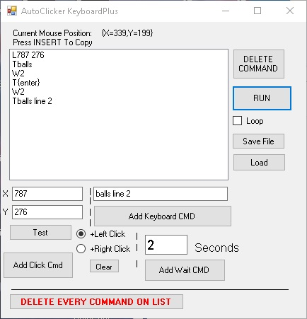
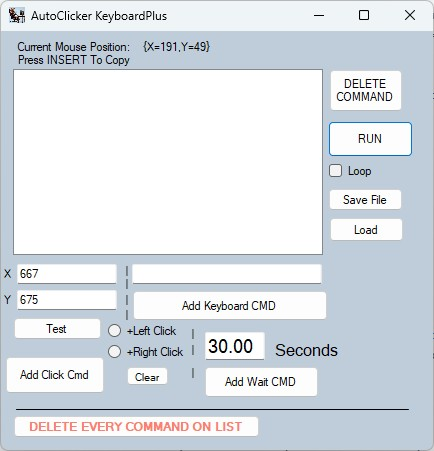
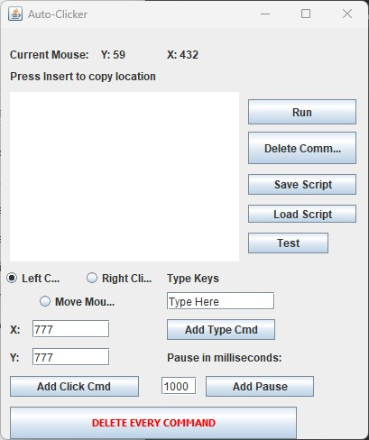

The 2 main functions on a computer are mouse and keyboard. This program allows you to program those 2 functions "as if a person was there". Need to act like you are working? Use the auto clicker. Need to test software repeatedly to find bugs? Use the auto clicker. The best thing about the auto clicker is you can use it for personal reasons instead of doing repetitive motions on the computer.
What are the 2 things people do on a computer? They click a mouse and type on the keyboard. This program allows users to simulate both, with an extra wait command between actions. The X & Y coordinates change as you move your mouse. Move the mouse to the position you want and press ‘Insert’ to copy the coordinates into the program.
The 5 commands:
M – Move the mouse
R – Right Click
L – Left Click
T – Type from keyboard
W – Wait (seconds)
1. Move the mouse to wherever you want to click.
2. Press the Insert key to copy the X and Y coordinates into the program.
3. Choose “Left Click” or “Right Click”.
4. Press “Add Click Cmd” to add the command to the script. Press “Test” to verify.
Note: Click “Clear” if you want movement without clicks.
Type the keys you want pressed.
Click “Add Keyboard CMD” to add the command.
Note: To use Enter, type {enter}.
More information on SendKeys
Add pauses between actions using the wait command.
Type the number of seconds and click “Add Wait CMD”.
Note: Uses a sleep function, so the program may appear unresponsive.
To run the script, press “Run”. Every command in the list will execute.
Check “Loop” to repeat the script until the program is closed.
Save your script before running it in a loop if you plan to reuse it.
Example Script:
Move Mouse to 15,888
Right click at 15,888 (Windows Start icon)
Wait 2 seconds
Left click at 131,585 (opens PowerShell)
Wait 20 seconds
Type “netstat -o”
Wait 1 second
Press Enter
Loop repeats the script indefinitely.